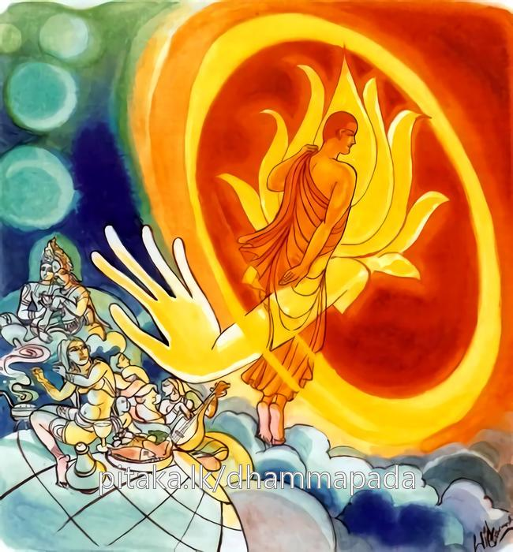

26-32 සුන්දර සමුද්ද තෙරුන්ගේ කථා පුවත
මෙම කතාව සද්ධර්ම සාගරයෙන් ද කියවන්න.
යොධ කාමෙ පහාත්වාන අනාගාරො පරිබ්බජෙ
කාමභවපරික්ඛීණං තමහං බ්රූමි බ්රාහ්මණං.
මේ ලෝකයෙහි යම් පුද්ගලයෙක් තෙම කාමයන් දුරැලා ගෘහවාසය හැර පියා පැවිදි වේ ද, කාමතෘෂ්ණා භවතෘෂ්ණා ක්ෂීණ කළා වූ ඒ අශෛක්ෂයා බ්රාහ්මණ යැ යි මම් කියමි.

"යොධ කාමෙ” යන මේ ධර්ම දේශනය ශාස්තෲන් වහන්සේ ජේතවනයේ වැඩ සිටියදී සුන්දර සමුද්ද තෙරුන් නිමිති කර ගෙන දේශනා කළහ.
සැවැත් නුවරවාසී එක් කුල පුත්රයෙක් සුන්දර සමුද්ද නම් විය. සතළිස් කෙළක් ධන සම්පත් ඇති මහා කුලයක උපන් හේ එක් දිනක් සවස්වරුවේ ගඳමල් ආදිය ගෙන මහජනයා ධර්ම ශ්රවණය සඳහා දෙව්රමට යනු බලා කොහේ යන්නෙදැයි විමසා බුදුන් වෙත ධර්ම ශ්රවණය සඳහා යයි පැවසූ විට මම ද යන්නෙමියි කියා ඔවුන් සමග ගොස් පිරිස් කෙළවර වාඩි වූයේය. බුදුහු ඔහුගේ අදහස් විමසා අනුපිළිවෙළ කථාව දේශනා කළහ. ඔහු ගිහිගෙයි වසමින් පිරිසිදු බ්රහ්මචරියාව හැසිරිමට නොහැකියයි වදාළ බුද්ධ දේශනය අසා පැවිදි වීම සඳහා හටගත් උනන්දුව නිසා පිරිස විසිරි ගිය පසු බුදුන්ගෙන් පැවිද්ද ඉල්ලා සිටියේය. මවුපියන්ගේ අනුමැතියෙන් තොරව පැවිදි නො කරන්නේයයි අසා ගෙදර ගොස් රට්ඨපාලි කුල පුත්රයා සේ මහත් උත්සාහයෙන් දෙමාපිය අනුමැතිය ගෙන බුදුන් වෙත පැවිදි වී උපසම්පදාව ලැබ මෙහි විසීමෙන් කවර ප්රයෝජනයක් දැයි ඉන් නික්මී රජගහ නුවරට ගොස් පිඩුපිණිස හැසිරෙමින් කල්ගත කරමින් සිටියදී අතර දිනක් සැවැත් නුවර උන්වහන්සේගේ දෙමාපියන් එක් උත්සව දිනයක මහත් සිරිසෝභාවෙන් ඔහුගේ සහායක කුමාරවරු ක්රීඩා කරනු දැක අපේ පුතුට මෙය දුර්ලභ විය. එසේ සිතා හැඩුන මේ අවස්ථාවේ දී එක් ගණිකාවක් එම කුලයට නිවසට ගොස් ඔහුගේ මව සිටිනු දැක මෑණියන් කුමක් නිසා හඩත්දැයි විමසුවාය. පුතා සිහි පත්වී අඩමි. මෑණියනි දැන් ඔහු කොහේද? භික්ෂූන් අතර පැවිදි විය. ඇයි උපහැදි කිරීම නොවටීද? වටී නමුත් කැමති නැත. මේ නගරයෙන් රජගහ නගරයට ගියේය. හොඳයි මම ඔහු උපැවිදි කරන්නම් මට කුමක් කරන්නේද? මේ මගේ කුලයට ස්වාමී කරවන්නෙමි. එසේනම් මට මග වියදමි දෙන්න මග වියදම් ගෙන මහත් පිරිවරින් රජගහ නුවරට ගොස් උන්වහන්සේ පිඬු සිඟා යන වීථියේ නිවසක් ගෙන උදේම ප්රණිත ආහාර පිළියෙළ කොට තෙරුන් පිඩු සිඟා වඩින විට භික්ෂාදී දින කීපයකට පසුව ස්වාමීනි මෙහිම සිට දන් වැළදීම කරන්නැයි පාත්රය ගත්තාය. උන්වහන්සේ පාත්රය දුන්නාහ. අනතුරුව ප්රණීත ආහාරවලින් අනුභව කරවා ස්වාමීනි මෙහාටම පිණ්ඩපාතයේ වැඩිම සුදුසු නො වන්නේද දින කීපයක් ආලින්දයේ වාඩි කරවා දානය වළදවා පසුව දරුවන්ට කැවුම් දී සංග්රහ කර තෙරුන් වැඩිය විට එන්න මට වළකද්දී මෙහි පැමිණ දුවිලි නංවා ලන්නැයි පැවසුවාය. දානය අවස්ථාවේ දී ඇය වළක්වදීම දුවිලි නැංවුහ.
ඇය දෙවැනි දිනයේ දී ස්වාමීනි දරුවන් වළක්වද්දීත් දුවිලි නංවන නිසා ගෙතුළ වාඩිවී වළදනු මැනව. දින කීපයක් මේ ලෙසට ගෙය තුළදී දන් වැළඳවුවාය. නැවත ඇය තෙරුන් වළදන විට මහා ශබ්ද ඇතිකර වුවාය. ඊට පසුදින ඇය ස්වාමීනි මෙහි අතිශයින් ශබ්ද සහිතය මම වළක්වා සිටියද මේ ළමයි වචනය නොගනී මතු මහලෙහිම වාඩි වී වළදන්නැයි පැවසුවිට තෙරුන් පෙරටු කොට ප්රාසාදයට නගින්න දොරවල් ආදිය වසමින්ම ප්රාසාදයට නැගුනි ගෙපිළිවෙළින් යාමට කළකිරුණ අතරට භෝජන රස තෘෂ්ණාවේ බැදුනේ ඇගේ වචනය නිසා සත් බුමුපහයට නැංගාහ. ඇය තෙරුන් වාඩි කරවා "වචනය සමීපව සිටි ස්ථානයන්හි ගැහැණු මිනිස්සුන්ට ආදරයෙන් කියයි. විජම්බනය කරයි. හැමෙයි, බබලවයි, ලජ්ජාව දක්වයි. නියෙන් නිය ගටයි. පයින් පය පාගයි කටුවකින් පොළොවේ ලියයි. දරුවන් උසවති පහතට එල්ලයි. ක්රීඩා කරයි ක්රීඩා කරවයි. සිඹියි. සිබවයි කයි කවයි දෙයි ඉල්ලයි කරන දේ කරයි. උස්හඩින් කථාකරයි. පහත් හඩින් කියවයි. සඟවා කියයි. විවෘතව කියයි නැටීමෙන් - ගායනයෙන් - වාදනයෙන් ඇඹිමෙන් විලාශ දැක්වීමෙන් අලංකාර කිරිමෙන් හඩ නගා සිනාසෙයි. බලයි. කටී ප්රදේශය සොලවයි සැඟවුණු තැන් සොලවයි. කළවා විවර කරයි කළවා වසයි. පියවුරු දක්වයි හඬ දක්වයි. ඇස පිසදමයි, ඇහි බැම ඔසවයි. තොල ලෙවකයි. දිව සොලවයි. රෙද්ද ලිහයි රෙද්ද ඇදගනී. කෙස් මුදාහරියි කෙස් බඳියි මේ ආදී ස්ත්රී ලක්ෂණ ස්ත්රී ලීලා පෙන්වා ඔහු ඉදිරියේ සිට මේ ගාථාව කීවාය.
ලා තඹ වැනි රතු පා ඇති වේසියගේ මිරිවැඩි සඟලට නැග ඔබද තවම තරුණය ඔබේ මම ද තවම තරුණය එබැවින් අප දෙදෙනම සැපත් විඳ ගිහිව සැරයටි වාරුවෙන් සිටින විට පසුව පැවිදි වන්නෙමු.
තෙරුන් වහන්සේට අහෝ මේ බැරෑරුම් දෙයකි. සිහිනොකර කරන ලද ක්රියාවක හැටි මහත් සංවේගයක් ඇති විය. මේ අවස්ථාවේදී බුදුහු යොදුන් හතළිස් පහක් දුර දෙව්රම සිටියදීම මේ කරුණ දැක සිනා පහළ කළහ. මේ නිසා ආනන්ද තෙරණුවෝ ස්වාමීනි කුමක් නිසා කවර හේතුවකින් සිතා පහළ කිරීමට ආනන්ද රජගහ නුවර පත්බුමු පහයක සුන්දර සමුද්ද තෙරුන් හා ගණිකාවක සමඟ සංග්රාමයක් පවතී. ස්වාමීනි කාට නම් ජය අත්වේ. කාට පරාජය සිදුවේද? ආනන්ද සුන්දර සමුද්දට ජය අත්වේ. ගණිකාව පරාජයට පත්වේ. තෙරුන්ට ජය පවසා එහි වැඩසිටියදීම ආලෝකයක් පතුරුවා භික්ෂුව කාම දෙකම අපේක්ෂා රහිතව අරින්න යයි පවසා මේ ගාථාව දෙසුහ.
ගිහිගෙයින් නික්මී
අනගාරිකව වෙසෙනා
පස්කම් දුරැලු ඔහු
උතුම් බමුණෙක් වේමැයි
මෙලොව යම් පුද්ගලයෙක් කාමයන් පහකොට ගිහිගෙය හැර පැවිදිවේද, කාමයන් භවයන් ක්ෂය කළ ඔහුට මට බ්රාහ්මණයයි කියමි.
එහි අර්ථය යො - යම් පුද්ගලයෙක් ඉධ - මෙලොව උහොපි කාමෙ, හිත්ථා දෙවැදැරුම් කාමයන් අත්හැර අනාගාරො හුත්ථා - ගිහිගෙන් නික්ම පැවිදිව, කාමයන්ද භවයන්ද, නැති නැති කරයිද ඔහු බ්රාහ්මණ වේ.
දේශනය අවසානයේ තෙරුන් රහත්වී සෘද්ධි බලයෙන් අහසට නැගී කැණිමඩල බිදදමා පැමිණ බුදුන් වැන්දේය. ධම් සභාවේ කථාවක් ඇතිකළහ. ඇවැත්නි ! දිව පිනවන රසය නිසා මනස නැසුනි. සුන්දර සමුද්ද තෙරුන්ට තථාගතයන් අවශ්යවිය බුදුහු එම කථාව අසා මහණෙනි දැන් පමණක් නොව පෙරද ඔහු රස තෘෂ්ණාවේ බැදී මාව අවශ්යවීයයි පවසා අතීතය ගෙනහැර දැක්වුහ.
නිරන්තර වාසස්ථාන වූ, ආවාසයෙහි ද, මිත්ර සත්ථවයෙහිද ඡන්දරාගය ලාමකය. දිවට දැනෙන රසයෙහි ඡන්දරාගය යට කී දෙකරුණෙහි ඇල්මට වඩා ලාමකය. ඊට වඩා අධික ඡන්ද රාගයක් නැත්තේමය. සඤ්ජය නම් උයපලු තෙමේ වාත මෘගයා රසයෙන් පොළඹවා තමාගේ වසඟයට ගත්තේය.
ඒකක නිපාතයේ එන මෙම වාතමිග ජාතකය විස්තර කොට එදා වාත මෘගයා (අද) සුන්දර සමුද්ද නම් වුයේය. මෙම ගාථාව වදාරා එය විසඳු රජුගේ මහා මාත්ය මම වී මැයි ජාතක ය ගළපා වදාළ සේක.